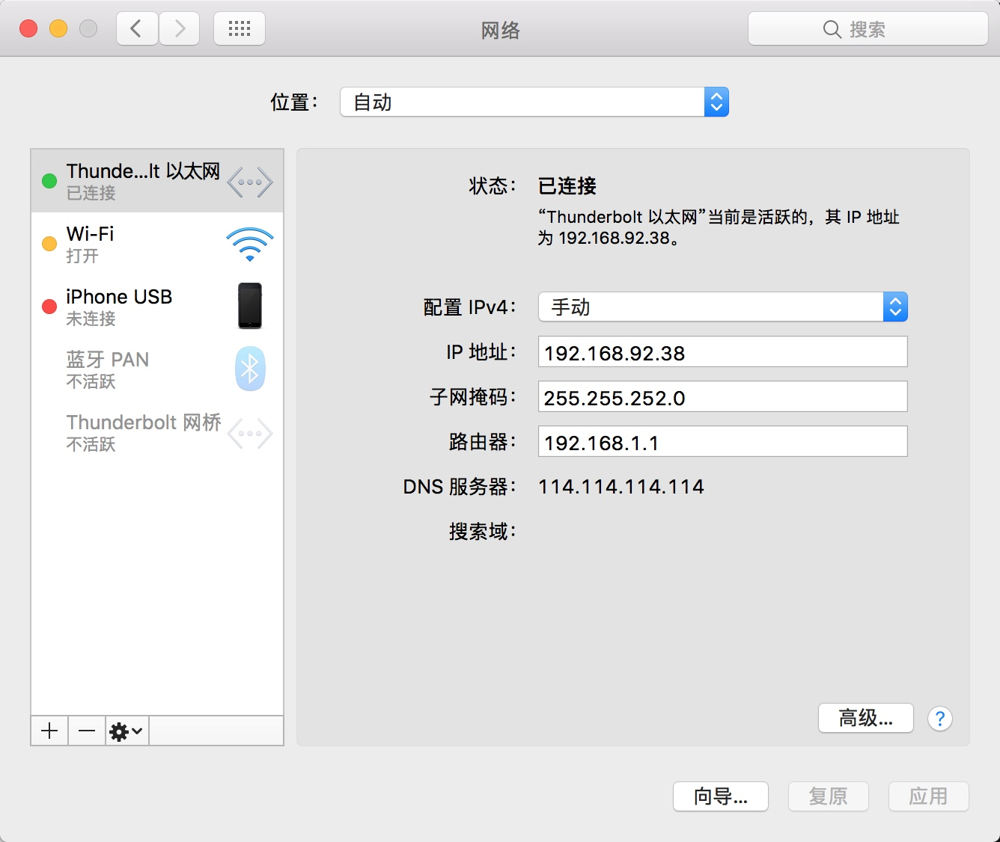

<!doctype html>
<html class="no-js" lang="en">
  <head>
    <meta charset="utf-8" />
    <meta name="viewport" content="width=device-width, initial-scale=1.0" />
    <title>
    
  kavalon
  
  </title>
  
  
  <link href="atom.xml" rel="alternate" title="kavalon" type="application/atom+xml">
    <link rel="stylesheet" href="asset/css/foundation.min.css" />
    <link rel="stylesheet" href="asset/css/docs.css" />
    <script src="asset/js/vendor/modernizr.js"></script>
    <script src="asset/js/vendor/jquery.js"></script>
  <script src="asset/highlightjs/highlight.pack.js"></script>
  <link href="asset/highlightjs/styles/github.css" media="screen, projection" rel="stylesheet" type="text/css">
  <script>hljs.initHighlightingOnLoad();</script>
<script type="text/javascript">
  function before_search(){
    var searchVal = 'site:klovelovely.github.io ' + document.getElementById('search_input').value;
    document.getElementById('search_q').value = searchVal;
    return true;
  }
</script>
  </head>
  <body class="antialiased hide-extras">
    
    <div class="marketing off-canvas-wrap" data-offcanvas>
      <div class="inner-wrap">


<nav class="top-bar docs-bar hide-for-small" data-topbar>


  <section class="top-bar-section">
  <div class="row">
      <div style="position: relative;width:100%;"><div style="position: absolute; width:100%;">
        <ul id="main-menu" class="left">
        
        <li id=""><a target="self" href="index.html">Home</a></li>
        
        <li id=""><a target="_self" href="archives.html">Archives</a></li>
        
        </ul>

        <ul class="right" id="search-wrap">
          <li>
<form target="_blank" onsubmit="return before_search();" action="http://google.com/search" method="get">
    <input type="hidden" id="search_q" name="q" value="" />
    <input tabindex="1" type="search" id="search_input"  placeholder="Search"/>
</form>
</li>
          </ul>
      </div></div>
  </div>
  </section>

</nav>

        <nav class="tab-bar show-for-small">
  <a href="javascript:void(0)" class="left-off-canvas-toggle menu-icon">
    <span> &nbsp; kavalon</span>
  </a>
</nav>

<aside class="left-off-canvas-menu">
      <ul class="off-canvas-list">
       
       <li><a href="index.html">HOME</a></li>
    <li><a href="archives.html">Archives</a></li>
    <li><a href="about.html">ABOUT</a></li>

    <li><label>Categories</label></li>

        
            <li><a href="memo.html">memo</a></li>
        
            <li><a href="tech.html">tech</a></li>
        
            <li><a href="macOS.html">macOS</a></li>
         

      </ul>
    </aside>

<a class="exit-off-canvas" href="#"></a>


        <section id="main-content" role="main" class="scroll-container">
        
       

 <script type="text/javascript">
	$(function(){
		$('#menu_item_index').addClass('is_active');
	});
</script>
<div class="row">
	<div class="large-8 medium-8 columns">
		<div class="markdown-body home-categories">
		
			<div class="article">
                <a class="clearlink" href="14981186463825.html">
                
                  <h1>macOS 下 Charles 设置移动端代理遇到的坑 - shadowsocks</h1>
                  <div class="a-content">
                      
                      <div class="a-content-text">
                        
                        	<p>Charles 设置移动端抓包没有什么困难的, 大部分的问题基本都搜得到, 但是最近遇到了一个少见但是对于经常手机开着 shadowsocks 之类科学上网 App 的却很难排查的问题, 因为这个坑浪费了自己1个多小时, 所以在这里记一下备忘.</p>

<p>大概的症状就是, 所有的配置都是之前一直在用的配置所以绝对没有问题, 然后如果手机配置正确, 在配置好代理的时候, Charles 是会弹窗提示新设备连接, 是否允许的. 但是这次在自己手机端配置好代理之后, Charles 却一直没有任何反应. 是的, 没有任何反应... 于是就踏上了没有任何调试信息调试工具辅助的 debug 之路(</p>

<p>总结出来就是一句话:</p>

<p>使用 Charles 设置移动端抓包的时候, 手机记得一定要关闭 shadowsocks 代理, 就算是规则代理也不行.</p>

<p>之前一直以为 shadowsocks 的规则代理只会对规则内列表起作用, 所以这次设置 Charles 就没有考虑到这方面...</p>

<p>所以基于这样的实际情况, 推测 ss 开启的情况下, 首先会监听所有 socket 请求, 然后如果开启了基于规则的代理策略, 则会把这些请求和代理规则进行匹配, 如果匹配上就会转到代理服务器, 如果匹配不上则会以自己的身份直接转发给对应的地址(从Android系统设置里的耗电和网络流量排行中也可以看得出来), 虽然看起来没有太大区别, 但是</p>

                        
                      </div>
                  </div>
                </a>
                <div class="read-more clearfix">
                  <div class="more-left left">
                  
                    <span class="date">2017/6/22</span>
                    <span>posted in&nbsp;</span> 
          				  
          					    <span class="posted-in"><a href='macOS.html'>macOS</a></span>
          				   
                  </div>
                  <div class="more-right right">
                  <span class="comments">
                      

                       
                  </span>
                  </div>
                </div>
              </div><!-- article -->
        
			<div class="article">
                <a class="clearlink" href="14966456619747.html">
                
                  <h1>Mac下终端常用命令</h1>
                  <div class="a-content">
                      
                      <div class="a-content-text">
                        
                        	<ul>
<li><p>Mac App Store 下载失败<br/>
终端输入：defaults write com.apple.appstore ShowDebugMenu -bool true</p></li>
<li><p>显示和隐藏文件<br/>
显示：defaults write com.apple.finder AppleShowAllFiles -bool true<br/>
隐藏：defaults write com.apple.finder AppleShowAllFiles -bool false<br/>
终端输入后，需重新启动Finder<br/>
点左上角苹果logo  &gt;&gt; 强制退出  &gt;&gt; 选中Finder  &gt;&gt; 点“重新开启”</p></li>
<li><p>路由表的输出信息<br/>
终端输入：netstat -nr</p></li>
<li><p>配置环境变量<br/>
Mac 环境变量有两种，一种是全局的，公用的，针对系统所有用户；另一种是用户级的，只对当前用户有效。</p></li>
</ul>

<p>/etc/profile 全局配置文件，所有用户登录时读取此文件，一般不修改。<br/>
使用时需使用 sudo 以Root权限运行（慎用）</p>

<p>/etc/bashrc 全局配置文件，运行bash shell时读取此文件，一般在这里修改系统级环境变量。</p>

<p>~/.bash_profile 用户级配置文件，用户登录时，该文件仅执行一次。一般在这里修改用户级环境变量。<br/>
可使用 vi 命令进行编辑。</p>

<ul>
<li>进入输入模式的方法如下：
增加（append）
按 “a” 键  从光标所在位置后面新增内容。
按 “A” 键  从光标所在行最后面新增内容。
插入（insert）
按 “i” 键  在光标所在位置前面插入内容，光标后面内容随之后退。
按 “I” 键  在光标所在行第一个非空白字符前插入内容。
开始（open）
按 “o” 键  在光标所在行下面新建一行
按 “O” 键  在光标所在行上面新建一行</li>
<li><p>退出vi编辑器(冒号在前)<br/>
:x  退出并保存。<br/>
:wq 退出并保存。<br/>
:w 仅保存。<br/>
:w filename 保存为指定的文件，可用于另存为。<br/>
:q 仅退出，有修改内容时会提示要保存。<br/>
:q! 强制不保存退出。</p></li>
<li><p>网络设置</p>

<ol>
<li><p>列出网卡<br/>
终端输入：networksetup -listallnetworkservices</p></li>
<li><p>关闭 ipv6<br/>
终端输入：networksetup -setv6off &quot;网卡名称&quot; <br/>
比如关闭以太网ipv6 : networksetup -setv6off Ethernet</p></li>
<li><p>设置IP地址<br/>
终端输入：networksetup -setmanual &quot;网卡名称&quot; 192.168.31.2 255.255.255.0 192.168.1.1</p></li>
</ol></li>
<li><p>登录Linux服务器<br/>
终端输入：ssh user@hostname<br/>
user = Linux 服务器管理员账号<br/>
hostname = Linux 服务器IP</p></li>
<li><p>设置Dock仅显示当前打开的应用图标<br/>
终端输入：defaults write com.apple.dock static-only -boolean true; killall Dock<br/>
恢复：defaults delete com.apple.dock static-only; killall Dock</p></li>
<li><p>清除 dns 缓存<br/>
终端中刷新DNS的discovoryutil命令在macOS 10.10.4中被移除，在macOS 10.12之后刷新DNS缓存的命令为：<br/>
sudo dscacheutil -flushcache;sudo killall -HUP mDNSResponder;say flushed</p></li>
</ul>

                        
                      </div>
                  </div>
                </a>
                <div class="read-more clearfix">
                  <div class="more-left left">
                  
                    <span class="date">2017/6/5</span>
                    <span>posted in&nbsp;</span> 
          				  
          					    <span class="posted-in"><a href='macOS.html'>macOS</a></span>
          				   
                  </div>
                  <div class="more-right right">
                  <span class="comments">
                      

                       
                  </span>
                  </div>
                </div>
              </div><!-- article -->
        
			<div class="article">
                <a class="clearlink" href="14966442779567.html">
                
                  <h1>Mac 关闭 IPV6</h1>
                  <div class="a-content">
                      
                      <div class="a-content-text">
                        
                        	<p>公司的内网调试, 需要设置一个固定的 IPV4 地址, 设置完保存的时候, 提示: &quot;无效的服务器地址BasicIPv6ValidationError&quot;, 这边稍微搜了下, 没有什么太直接的解决方法, 所以在这里记录一下备忘.</p>

<p><strong>先关闭IPv6，然后设置IPv4，再重新开启IPv6</strong></p>

<pre><code class="language-bash">networksetup -setv6off &quot;Ethernet&quot;
</code></pre>

<p>这里的 <code>Ethernet</code> 是你要关闭 IPV6 的网卡服务名称, 也就是你在 Mac 设置 -&gt; 网络面板左侧的连接方式名称. 在命令行中输入时一定要使用英文的形式, 比如 &quot;Thunderbolt 以太网&quot; 在命令行中就需要输入 </p>

<pre><code class="language-bash">networksetup -setv6off &quot;Thunderbolt Ethernet&quot;
</code></pre>

<p></p>

<p>执行成功之后再次查看就会发现 IPV6 已经自动关闭了.</p>

                        
                      </div>
                  </div>
                </a>
                <div class="read-more clearfix">
                  <div class="more-left left">
                  
                    <span class="date">2017/6/5</span>
                    <span>posted in&nbsp;</span> 
          				  
          					    <span class="posted-in"><a href='macOS.html'>macOS</a></span>
          				   
                  </div>
                  <div class="more-right right">
                  <span class="comments">
                      

                       
                  </span>
                  </div>
                </div>
              </div><!-- article -->
        
			<div class="article">
                <a class="clearlink" href="14919047125523.html">
                
                  <h1>使用 yeoman angular-generator 作为脚手架时, 遇到的一些坑和 tricks</h1>
                  <div class="a-content">
                      
                      <div class="a-content-text">
                        
                        	<h3 id="toc_0">在命令行中执行 npm install 时下载 Phantomjs 依赖包失败的问题</h3>

<p>shadowsocks 已经开了, 但是这个文件通过命令行依然无法访问, 可以在命令行里试着跑一下这个:</p>

<pre><code class="language-bash">wget https://github.com/Medium/phantomjs/releases/download/v2.1.1//phantomjs-2.1.1-macosx.zip
</code></pre>

<p>如果提示操作超时(类似下面的提示), 就可以证明是这个问题了.</p>

<blockquote>
<p>Connecting to github-cloud.s3.amazonaws.com|54.231.49.96|:443... failed: Operation timed out.</p>
</blockquote>

<p>由于 shadowsocks 是基于 socket 的协议, 无法代理更底层的 TCP/IP, 所以需要一个工具可以让 TCP/IP 也走 socket5.</p>

<p>之前一直用的是 proxychains, 但是每次执行都需要在单个命令前加前缀, 虽然可以 alias 成更短的 ps, 但 npm install 安装依赖的话还是非常不方便.</p>

<p>后来找到了这个 <a href="https://www.proxifier.com">Proxifier</a></p>

<p>这个工具也有 <a href="">Windows 版</a></p>

<p>神秘代码我神马都布吉岛(雾 <code>P427L-9Y552-5433E-8DSR3-58Z68</code></p>

<p>个人感觉还是非常好用的, 推荐使用 Windows 和 Mac 的同学试一下~</p>

<p>打开后配置好本地 IP 127.0.0.1 和本地端口 1080 type 为 socks5, 就可以使用了.</p>

<p>优点:</p>

<ul>
<li>自定义每个应用设置是否proxy</li>
<li>自定义host是否proxy</li>
<li>不影响浏览器是否全局</li>
<li>查看当前连接</li>
</ul>

<p>另外, 使用 linux 的同学可以尝试下 redproxy .</p>

<p>来源: <a href="http://sxiaojian.com/2016/07/04/terminal-shadowsocks/">http://sxiaojian.com/2016/07/04/terminal-shadowsocks/</a></p>

<h3 id="toc_1">Ruby 推荐安装方式</h3>

<ol>
<li>安装 <a href="https://ruby-china.org/wiki/install_ruby_guide">Ruby(rvm)</a></li>
<li>然后安装 sass compass - gem install sass compass</li>
</ol>

<h3 id="toc_2">Node 安装方式</h3>

<ol>
<li><a href="http://nodejs.org">node(nvm)</a></li>
<li>然后升级 node 自带的 npm 到最新版本 <code>npm install --global npm@latest</code></li>
</ol>

<h3 id="toc_3"><a href="http://yeoman.io/codelab/setup.html">Yeoman</a> 相关配置</h3>

<pre><code>* npm install grunt-cli gulp-cli Yeoman -g
</code></pre>

<hr/>

<blockquote>
<p>Written with <a href="https://stackedit.io/">StackEdit</a>.</p>
</blockquote>

                        
                      </div>
                  </div>
                </a>
                <div class="read-more clearfix">
                  <div class="more-left left">
                  
                    <span class="date">2017/4/11</span>
                    <span>posted in&nbsp;</span> 
          				  
          					    <span class="posted-in"><a href='tech.html'>tech</a></span>
          				   
                  </div>
                  <div class="more-right right">
                  <span class="comments">
                      

                       
                  </span>
                  </div>
                </div>
              </div><!-- article -->
        
			<div class="article">
                <a class="clearlink" href="14910675180431.html">
                
                  <h1>万圣 (请注意, 可能会造成不适)</h1>
                  <div class="a-content">
                      
                      <div class="a-content-text">
                        
                        	<p><br/>
<br/>
<br/>
<br/>
</p>

                        
                      </div>
                  </div>
                </a>
                <div class="read-more clearfix">
                  <div class="more-left left">
                  
                    <span class="date">2017/4/2</span>
                    <span>posted in&nbsp;</span> 
          				  
          					    <span class="posted-in"><a href='memo.html'>memo</a></span>
          				   
                  </div>
                  <div class="more-right right">
                  <span class="comments">
                      

                       
                  </span>
                  </div>
                </div>
              </div><!-- article -->
        
              


			<div class="row">
			  <div class="large-6 columns">
			  <p class="text-left" style="padding-top:25px;">
			   
			  </p>
			  </div>
			  <div class="large-6 columns">
			<p class="text-right" style="padding-top:25px;">
			 <a href="all_1.html">&raquo; Next Page</a> 
			</p>
			  </div>
			</div>
		</div>
	</div><!-- large 8 -->

 <div class="large-4 medium-4 columns">
  <div class="hide-for-small">
    <div id="sidebar" class="sidebar">
          <div id="site-info" class="site-info">
            
                <h1>kavalon</h1>
                <div class="site-des">kavalon's</div>
                <div class="social">


  <a target="_blank" class="rss" href="atom.xml" title="RSS">RSS</a>
                
              	 </div>
          	</div>

             

              <div id="site-categories" class="side-item ">
                <div class="side-header">
                  <h2>Categories</h2>
                </div>
                <div class="side-content">

      	<p class="cat-list">
        
            <a href="memo.html"><strong>memo</strong></a>
        
            <a href="tech.html"><strong>tech</strong></a>
        
            <a href="macOS.html"><strong>macOS</strong></a>
         
        </p>


                </div>
              </div>

              <div id="site-categories" class="side-item">
                <div class="side-header">
                  <h2>Recent Posts</h2>
                </div>
                <div class="side-content">
                <ul class="posts-list">
	      
		      
			      <li class="post">
			        <a href="14981186463825.html">macOS 下 Charles 设置移动端代理遇到的坑 - shadowsocks</a>
			      </li>
		     
		  
		      
			      <li class="post">
			        <a href="14966456619747.html">Mac下终端常用命令</a>
			      </li>
		     
		  
		      
			      <li class="post">
			        <a href="14966442779567.html">Mac 关闭 IPV6</a>
			      </li>
		     
		  
		      
			      <li class="post">
			        <a href="14919047125523.html">使用 yeoman angular-generator 作为脚手架时, 遇到的一些坑和 tricks</a>
			      </li>
		     
		  
		      
			      <li class="post">
			        <a href="14910675180431.html">万圣 (请注意, 可能会造成不适)</a>
			      </li>
		     
		  
		      
		  
		      
		  
		      
		  
		      
		  
		      
		  
		      
		  
		      
		  
		      
		  
		      
		  
		      
		  
		      
		  
		      
		  
		      
		   
		  		</ul>
                </div>
              </div>
        </div><!-- sidebar -->
      </div><!-- hide for small -->
</div><!-- large 4 -->

</div><!-- row -->

 <div class="page-bottom clearfix">
  <div class="row">
   <p class="copyright">Copyright &copy; 2015
Powered by <a target="_blank" href="http://www.mweb.im">MWeb</a>,&nbsp; 
Theme used <a target="_blank" href="http://github.com">GitHub CSS</a>.</p>
  </div>
</div>

        </section>
      </div>
    </div>

  
    

    <script src="asset/js/foundation.min.js"></script>
    <script>
      $(document).foundation();
      function fixSidebarHeight(){
        var w1 = $('.markdown-body').height();
          var w2 = $('#sidebar').height();
          if (w1 > w2) { $('#sidebar').height(w1); };
      }
      $(function(){
        fixSidebarHeight();
      })
      $(window).load(function(){
          fixSidebarHeight();
      });
     
    </script>

    


  </body>
</html>
